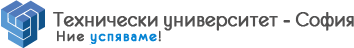
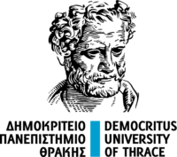

Partners
Four universities. One shared direction.

Technical University of Sofia
Bulgaria — Coordinator
Coordinates project management and leads the digital ecosystem, including the database, mobile application, AI-supported functionalities and content-management tools. Also leads promotion and dissemination.
Technical University of Cluj-Napoca
Romania
Coordinates the educational methodology and pilot resources and contributes to dissemination and sustainability, including modules for personalised advice, additional questions and linked learning content.

Democritus University of Thrace
Greece
Coordinates content review and multilingual adaptation and contributes AI-supported analysis, content-management and activity-tracking modules. Leads the final validation workshop and sustainability work.
Cyprus University of Technology
Cyprus
Leads digital educational resources and sustainability education and contributes to requirements analysis, the sustainability chatbot, pilot implementation, user feedback and impact evaluation.